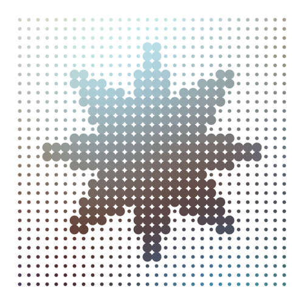

Polygons and paths
For drawing shapes, Luxor provides polygons and paths.
A polygon is an ordered collection of Points stored in an array.
A path is a sequence of one or more straight and curved (circular arc or Bézier curve) segments. Paths can consist of subpaths. Luxor maintains a 'current path', to which you can add lines and curves until you finish with a stroke or fill instruction.
Luxor also provides a BezierPath type, which is an array of four-point tuples, each of which is a Bézier cubic curve section.
Regular polygons ("ngons")
A polygon is an array of points. The points can be joined with straight lines.
You can make regular polygons — from triangles, pentagons, hexagons, septagons, heptagons, octagons, nonagons, decagons, and on-and-on-agons — with ngon.
cols = distinguishable_colors(10)
setline(2)
fontsize(12)
tiles = Tiler(700, 600, 3, 3)
for (pos, n) in tiles
@layer begin
translate(pos)
p = ngon(Point(0, 0), 80, n, vertices=true)
sethue(cols[n])
poly(p, :fill, close=true)
sethue("black")
poly(p, :stroke, close=true)
circle(Point(0, 0), 4, :fill)
label.([string(i) for i in 1:n], slope.(O, p), p, offset=5)
end
endThe initial orientation of the polygon defaults to 0.

If you want to specify the side length rather than the circumradius, use ngonside.
for i in 20:-1:3
sethue(i/20, 0.5, 0.7)
ngonside(Point(0, 0), 75, i, 0, :fill)
sethue("black")
ngonside(Point(0, 0), 75, i, 0, :stroke)
end
The functions return the vertices, or you can use the vertices=true option.
ngon(Point(0, 0), 10, 5) Point(3.0901699437494745, 9.510565162951535)
Point(-8.090169943749473, 5.877852522924733)
Point(-8.090169943749475, -5.87785252292473)
Point(3.0901699437494723, -9.510565162951536)
Point(10.0, -2.4492935982947065e-15)Polygons
Use poly to draw lines connecting the points and/or just fill the area:
tiles = Tiler(600, 250, 1, 2, margin=20)
tile1, tile2 = collect(tiles)
randompoints = [Point(rand(-100:100), rand(-100:100)) for i in 1:10]
gsave()
translate(tile1[1])
poly(randompoints, :stroke)
grestore()
gsave()
translate(tile2[1])
poly(randompoints, :fill)
grestore()
A polygon can contain holes. The reversepath keyword changes the direction of the polygon. The following piece of code uses ngon to make and draw two paths, the second forming a hole in the first, to make a hexagonal bolt shape:
setline(5)
sethue("gold")
line(Point(-200, 0), Point(200, 0), :stroke)
sethue("orchid4")
ngon(0, 0, 60, 6, 0, :path)
newsubpath()
ngon(0, 0, 40, 6, 0, :path, reversepath=true)
fillstroke()
The prettypoly function can place graphics at each vertex of a polygon. After the polygon action, the supplied vertexfunction function is evaluated at each vertex. For example, to mark each vertex of a polygon with a randomly-colored circle:
apoly = star(O, 70, 7, 0.6, 0, vertices=true)
prettypoly(apoly, :fill, () ->
begin
randomhue()
circle(O, 10, :fill)
end,
close=true)
An optional keyword argument vertexlabels lets you pass a function that can number each vertex. The function can use two arguments, the current vertex number, and the total number of points in the polygon:
apoly = star(O, 80, 5, 0.6, 0, vertices=true)
prettypoly(apoly,
:stroke,
vertexlabels = (n, l) -> (text(string(n, " of ", l), halign=:center)),
close=true)
Recursive decoration is possible:
decorate(pos, p, level) = begin
if level < 4
randomhue()
scale(0.25, 0.25)
prettypoly(p, :fill, () -> decorate(pos, p, level+1), close=true)
end
end
apoly = star(O, 100, 7, 0.6, 0, vertices=true)
prettypoly(apoly, :fill, () -> decorate(O, apoly, 1), close=true)
Polygons can be simplified using the Douglas-Peucker algorithm (non-recursive version), via simplify.
sincurve = [Point(6x, 80sin(x)) for x in -5π:π/20:5π]
prettypoly(collect(sincurve), :stroke,
() -> begin
sethue("red")
circle(O, 3, :fill)
end)
text(string("number of points: ", length(collect(sincurve))), 0, 100)
translate(0, 200)
simplercurve = simplify(collect(sincurve), 0.5)
prettypoly(simplercurve, :stroke,
() -> begin
sethue("red")
circle(O, 3, :fill)
end)
text(string("number of points: ", length(simplercurve)), 0, 100)
The isinside function returns true if a point is inside a polygon.
apolygon = star(O, 200, 8, 0.5, 0, vertices=true)
for pt in collect(first.(Table(30, 30, 15, 15)))
sethue(noise(pt.x/600, pt.y/600), noise(pt.x/300, pt.y/300), noise(pt.x/250, pt.y/250))
isinside(pt, apolygon, allowonedge=true) ? circle(pt, 8, :fill) : circle(pt, 3, :fill)
end
Quickly changing polygons
If you want to quickly and permanently modify a polygon, there's polymove!, polyscale!, polyreflect!, and polyrotate!.
shape = star(O, 10, 5, 0.5, 0, vertices=true)
circle(O, 3, :stroke)
polymove!(shape, O, O + (0, 50))
poly(shape, :stroke, close=true)
for i in 1:20
poly(polyrotate!(shape, π/5), :fill, close=true)
polyscale!(shape, 19//18)
endThe polygon is continually modified (notice the ! in the function names).

pgon = randompointarray(BoundingBox()/2 ..., 10)
polymove!(pgon, O, Point(-80, 0))
poly(pgon, :fill, close=true)
# reflect in y axis:
polyreflect!(pgon, Point(0, 0), Point(0, 100))
sethue("blue")
poly(pgon, :fill, close=true)
Other functions
There are a number of experimental polygon functions. These won't work well for polygons that aren't simple or where the sides intersect each other, but they sometimes do a reasonable job. For example, here's polysplit:
s = squircle(O, 60, 60, vertices=true)
pt1 = Point(0, -120)
pt2 = Point(0, 120)
line(pt1, pt2, :stroke)
poly1, poly2 = polysplit(s, pt1, pt2)
randomhue()
poly(poly1, :fill)
randomhue()
poly(poly2, :fill)Smoothing polygons
Because polygons can have sharp corners, the experimental polysmooth function attempts to insert arcs at the corners and draw the result.
The original polygon is shown in red; the smoothed polygon is shown on top:
tiles = Tiler(600, 250, 1, 5, margin=10)
for (pos, n) in tiles
p = star(pos, tiles.tilewidth/2 - 2, 5, 0.3, 0, vertices=true)
sethue("red")
poly(p, close=true, :stroke)
sethue("black")
polysmooth(p, n * 2, :fill)
end
The final polygon shows that you can get unexpected results if you attempt to smooth corners by more than the possible amount. The debug=true option draws the circles if you want to find out what's going wrong, or if you want to explore the effect in more detail.
p = star(O, 60, 5, 0.35, 0, vertices=true)
setdash("dot")
sethue("red")
prettypoly(p, close=true, :stroke)
setdash("solid")
sethue("black")
polysmooth(p, 40, :fill, debug=true)
Offsetting polygons
There are three methods for offsetpoly, a function which constructs a new polygon that's offset from an existing one.
offsetpoly(plist, d)treats theplistof points as a polygon withnvertices joined bynlines with offsetdon both sides.offsetpoly(plist, startoffset=d1, endoffset=d2)treats theplistof points as a polyline withnvertices joined byn-1lines, where the offset varies fromstartoffsettoendoffset.offsetpoly(plist, f::function)applies a function f at each vertex of the polyline to determine the width of the offset polygon at that point.
The first method is good for making closed shapes larger or smaller. The other methods are useful for building shapes around an open linear spine.
1: n vertices joined by n lines
The offsetpoly(plist, d) method constructs a closed polygon outside or inside an existing polygon, at distance d. The last vertex in plist as assumed to be be connected to the first.
In the following example, the dotted red polygon is the original, the black polygons have positive offsets and surround the original, the cyan polygons have negative offsets and run inside the original. Use poly to draw the result.
p = star(O, 45, 5, 0.5, 0, vertices=true)
sethue("red")
setdash("dot")
poly(p, :stroke, close=true)
setdash("solid")
sethue("black")
poly(offsetpoly(p, 20), :stroke, close=true)
poly(offsetpoly(p, 25), :stroke, close=true)
poly(offsetpoly(p, 30), :stroke, close=true)
poly(offsetpoly(p, 35), :stroke, close=true)
sethue("darkcyan")
poly(offsetpoly(p, -10), :stroke, close=true)
poly(offsetpoly(p, -15), :stroke, close=true)
poly(offsetpoly(p, -20), :stroke, close=true)
The function is intended for simple cases, and it can go wrong if pushed too far. Sometimes the offset distances can be larger than the polygon segments, and things will start to go wrong. In this example, the offset goes so far negative that the polygon overshoots the origin, becomes inverted and starts getting larger again.

2 n vertices joined by n-1 lines
The offsetpoly(plist) method constructs a polygon around a line joining the lines in plist. At the start of the line, the polygon will be startoffset units on each side; by the end of the line, the polygon will be endoffset units on each side. The last vertex isn't joined to the first, hence n-1.
In the following example, the original spine is drawn in orange, on top of the black polygon that's constructed to be offset 2 units on each side at the start and 30 units on each side at the end.
spine = [Point(20 + 40x, 15sin(2x)) for x in 0:.1:4π]
for θ in range(0, 2π, step=π/12)
@layer begin
sethue("black")
rotate(θ)
poly(offsetpoly(spine, startoffset=1, endoffset=30), :fill)
sethue("orange")
poly(spine, :stroke)
end
end
Using an offset-control function
This method accepts a keyword argument that allows you to control the way the offsets are applied, using the easing functionality built in to Luxor (see Animation helper functions).
By default the function is lineartween, so the offset changes linearly between the startoffset and the endoffset values. With other easing functions, this change is modulated. For example, the easeinoutquad function moves between start and end values using a quadratic motion.
spine = between.(O - (200, 0), O + (200, 0), 0:0.025:1)
sethue("red")
prettypoly(spine, :stroke)
sethue("black")
pg = offsetpoly(spine, startoffset=0, endoffset=200, easingfunction=easeinoutquad)
prettypoly(pg, :stroke, close=true)
But in the next example, the function f(t, b, c, d) (the Luxor standard four-argument easing function) is defined to run from 0 to 2 and back again as t goes from 0 to 1, so the initial and final offsets are 'eased' to 0, and at the middle of the polygon the offsets at that location are 'eased' to 2 × the offset value at that point.
spine = [Point(20x, 15sin(x)) for x in -4π:pi/24:4pi]
f(t, b, c, d) = 2sin(t * π)
pg = offsetpoly(spine, startoffset=1, endoffset=10, easingfunction=f)
sethue("black")
poly(pg, :fill)
sethue("white")
poly(spine, :stroke)
3: Applying a function
This method generates offset widths using the supplied function. The value of the supplied function f at f(0, θ) determines the start offset on each side, and f(1, θ) determines the finishing offset on each side. The width at the middle vertex will be f(0.5, θ) (on each side). θ is provided as the current slope of the polyline at that point.
spiralcurve = spiral(10, 0.3, log=true, period=3π)
f(x, θ) = 1 + 15sin(x * π)
pgon = offsetpoly(spiralcurve, f)
poly(pgon, :fill)
Fitting splines
The experimental polyfit function constructs a B-spline that follows the points approximately.
pts = [Point(x, rand(-100:100)) for x in -280:30:280]
setopacity(0.7)
sethue("red")
prettypoly(pts, :none, () -> circle(O, 5, :fill))
sethue("darkmagenta")
poly(polyfit(pts, 200), :stroke)
Converting paths to polygons
You can convert the current path to an array of polygons, using pathtopoly.
In the next example, the path consists of a number of paths, some of which are subpaths, which form the holes.
textpath("get polygons from paths")
plist = pathtopoly()
for (n, pgon) in enumerate(plist)
randomhue()
prettypoly(pgon, :stroke, close=true)
gsave()
translate(0, 100)
poly(polysortbyangle(pgon, polycentroid(pgon)), :stroke, close=true)
grestore()
end
The pathtopoly function calls getpathflat to convert the current path to an array of polygons, with each curved section flattened to line segments.
The getpath function gets the current path as an array of elements, lines, and unflattened curves.
Polygons to Bézier paths and back again
Use the makebezierpath and drawbezierpath functions to make and draw Bézier paths, and pathtobezierpaths to convert the current path to an array of Bézier paths.
A BezierPath type contains a sequence of BezierPathSegments; each curve segment is defined by four points: two end points and their control points.
(Point(-129.904, 75.0), # start point
Point(-162.38, 18.75), # ^ control point
Point(-64.9519, -150.0), # v control point
Point(-2.75546e-14, -150.0)), # end point
(Point(-2.75546e-14, -150.0),
Point(64.9519, -150.0),
Point(162.38, 18.75),
Point(129.904, 75.0)),
(Point(129.904, 75.0),
Point(97.4279, 131.25),
Point(-97.4279, 131.25),
Point(-129.904, 75.0)
),
...Bézier paths are different from ordinary paths in that they don't usually contain straight line segments. However, by setting the two control points to be the same as their matching start/end points, you create straight line sections.
makebezierpath takes the points in a polygon and converts each line segment into one Bézier curve. drawbezierpath draws the resulting sequence.
pts = ngon(O, 150, 3, pi/6, vertices=true)
bezpath = makebezierpath(pts)
poly(pts, :stroke)
for (p1, c1, c2, p2) in bezpath[1:end-1]
circle.([p1, p2], 4, :stroke)
circle.([c1, c2], 2, :fill)
line(p1, c1, :stroke)
line(p2, c2, :stroke)
end
sethue("black")
setline(3)
drawbezierpath(bezpath, :stroke, close=false)
tiles = Tiler(600, 300, 1, 4, margin=20)
for (pos, n) in tiles
@layer begin
translate(pos)
pts = polysortbyangle(
randompointarray(
Point(-tiles.tilewidth/2, -tiles.tilewidth/2),
Point(tiles.tilewidth/2, tiles.tilewidth/2),
4))
setopacity(0.7)
sethue("black")
prettypoly(pts, :stroke, close=true)
randomhue()
drawbezierpath(makebezierpath(pts), :fill)
end
end
You can convert a Bézier path to a polygon (an array of points), using the bezierpathtopoly function. This chops up the curves into a series of straight line segments. An optional steps keyword lets you specify how many line segments are used to approximate each Bézier segment.
In this example, the original star is drawn in a dotted gray line, then converted to a Bézier path (drawn in orange), then the Bézier path is converted (with low resolution) to a polygon but offset by 20 units before being drawn (in blue).
pgon = star(O, 250, 5, 0.6, 0, vertices=true)
@layer begin
setgrey(0.5)
setdash("dot")
poly(pgon, :stroke, close=true)
setline(5)
end
setline(4)
sethue("orangered")
np = makebezierpath(pgon)
drawbezierpath(np, :stroke)
sethue("steelblue")
p = bezierpathtopoly(np, steps=3)
q1 = offsetpoly(p, 20)
prettypoly(q1, :stroke, close=true)
You can convert the current path to an array of BezierPaths using the pathtobezierpaths function.
In the next example, the letter "a" is placed at the current position (set by move) and then converted to an array of Bézier paths. Each Bézier path is drawn first of all in gray, then the control points of segment are drawn (in orange) showing how they affect the curvature.
st = "a"
thefontsize = 500
fontsize(thefontsize)
sethue("red")
tex = textextents(st)
move(-tex[3]/2, tex[4]/2)
textpath(st)
nbps = pathtobezierpaths()
setline(1.5)
for nbp in nbps
sethue("grey80")
drawbezierpath(nbp, :stroke)
for p in nbp
sethue("darkorange")
circle(p[2], 2.0, :fill)
circle(p[3], 2.0, :fill)
line(p[2], p[1], :stroke)
line(p[3], p[4], :stroke)
if p[1] != p[4]
sethue("black")
circle(p[1], 2.0, :fill)
circle(p[4], 2.0, :fill)
end
end
end
beziersegmentangles lets you define a Bézier path segment by specifying the angles the control handles make with the base line.
setline(.5)
@layer begin
rule.(O, (0, (π/2)))
end
P = O
Q = O + (200, 0)
sethue("black")
pts = beziersegmentangles(P, Q,
out = deg2rad(60),
in = 2π - deg2rad(45))
@layer begin
setline(2)
sethue("purple")
drawbezierpath(pts, :stroke)
end
sethue("grey50")
line(O, pts[2], :stroke)
line(Q, pts[3], :stroke)
fontsize(15)
circle.((P, pts[2], pts[3], Q), 5, :fill)
label.(("P", "Q"), :ne, (P, Q))
text("60°", P + (40, 20))
text("135°", Q + (10, 20))
Brush strokes
The brush function builds Bezier paths in a quasi-random fashion, that could look like brush strokes. The optional keyword arguments allow a range of different effects.
You can pass a function that can adjust various drawing settings before the shapes are drawn.
brushα(nbpb) = begin
setline(1)
setopacity(0.3)
drawbezierpath(nbpb, :stroke)
sethue(0.2, 0.3, rand(0.3:0.01:0.65))
return nbpb
end
function numberit(pos, n)
@layer begin
sethue("black")
text(string(n), pos)
end
end
t = Tiler(800, 700, 5, 1)
sethue("orange3")
fontsize(20)
for (pos, n) in t
start, finish = pos - (200, 0), pos + (200, 0)
if n == 1
# five brush strokes
brush(start, finish, 1)
numberit(pos, n)
elseif n == 2
# minwidth and maxwidth control the, er, width
brush(start, finish, 5, minwidth = -5, maxwidth = 2)
numberit(pos, n)
elseif n == 3
# dont have to have transparent strokes
brush(start, finish, 20, minwidth = .2, randomopacity = false)
numberit(pos, n)
elseif n == 4
# twist and adjust handles to taste
brush(start, finish, minwidth = -.1, maxwidth = .2,
twist = 2, highhandle = 2, tidystart=false)
numberit(pos, n)
elseif n == 5
# call a function to modify each stroke
brush(start, finish, 1, minwidth = -2.2, maxwidth = .8,
lowhandle = -.4, highhandle = 1.5, twist = .5,
strokefunction = brushα)
numberit(pos, n)
end
end
For more information (and more than you probably wanted to know) about Luxor's Bézier paths, visit https://cormullion.github.io/pages/2018-06-20-bezier/.
Polygon information
polyperimeter calculates the length of a polygon's perimeter.
p = box(O, 50, 50, vertices=true)
poly(p, :stroke)
text(string(round(polyperimeter(p, closed=false))), O.x, O.y + 60)
translate(200, 0)
poly(p, :stroke, close=true)
text(string(round(polyperimeter(p, closed=true))), O.x, O.y + 60)
Polygon selection and modification
There are Luxor functions to return the first part or last part of a polygon. You can also ask for a resampling of a polygon, choosing either to increase the number of points (which places new points to the "lines" joining the vertices) or decrease them (which changes the shape of the polygon). It's also possible to insert vertices automatically.
polyportion and polyremainder return part of a polygon depending on the fraction you supply. For example, polyportion(p, 0.5) returns the first half of polygon p, polyremainder(p, .75) returns the last quarter of it.
p = ngon(O, 100, 7, 0, vertices=true)
poly(p, :stroke, close=true)
setopacity(0.75)
setline(20)
sethue("red")
poly(polyportion(p, 0.25), :stroke)
setline(10)
sethue("green")
poly(polyportion(p, 0.5), :stroke)
setline(5)
sethue("blue")
poly(polyportion(p, 0.75), :stroke)
setline(1)
circle(polyremainder(p, 0.75)[1], 5, :stroke) # first point
You can insert vertices in the edges of a polygon with insertvertices!. For example, this code inserts a new vertex into each side of a polygon five times. The polygon ends up with 128 vertices.
pts = box(O, 500, 200, vertices=true)
prettypoly(pts, :stroke, close=true)
for i in 1:5
insertvertices!(pts)
prettypoly(pts, :stroke, close=true)
fontsize(16)
label(string(length(pts)), :ne, pts[1], offset=10)
scale(0.8)
end
To resample a polygon, use polysample. In this example, the same four-sided polygon is resampled at multiples of 4, with different circle radii at each multiple. This adds more points to the new copy of the original polygon.
pts = ngon(O, 100, 4, vertices=true)
for (n, npoints) in enumerate(reverse([4, 8, 16, 32, 48]))
prettypoly(polysample(pts, npoints),
:stroke, close=true,
() -> begin
circle(O, 2n, :stroke)
end)
end
There is a closed option, which determines whether or not the final edge (the one that would join the final vertex to the first), is included in the sampling. In the following example, the original polygon is drawn in black, then sampled as a closed polygon (in blue), then as a non-closed one (magenta).
# original polygon
numbervertices(l, n) = label(string(l), :N, O)
drawvertices() = ngon(O, 3, 4, 0, :fill)
pts = [Point(30x, 20sin(x)) for x in -2π:π/6:2π]
# 1: drawn as defined
prettypoly(pts, "stroke", drawvertices, vertexlabels = numbervertices)
translate(0, 50)
# 2: resampled as closed
npoints = 40
sethue("cornflowerblue")
prettypoly(polysample(pts, npoints, closed=true), :stroke, drawvertices,
vertexlabels = numbervertices)
translate(0, 50)
# 3: resampled as open
sethue("magenta")
prettypoly(polysample(pts, npoints, closed=false), :stroke, drawvertices,
vertexlabels = numbervertices)
Polygon side lengths
polydistances returns an array of the accumulated side lengths of a polygon.
julia> p = ngon(O, 100, 7, 0, vertices=true);
julia> polydistances(p)
8-element Array{Real,1}:
0.0000
86.7767
173.553
260.33
347.107
433.884
520.66
607.437It's used by polyportion and polyremainder, and you can pre-calculate and pass them to these functions via keyword arguments for performance. By default the result includes the final closing segment (closed=true).
These functions also make use of the nearestindex, which returns a tuple of: the index of the nearest value in an array of distances to a given value; and the excess value.
In this example, we want to find a point halfway round the perimeter of a triangle. Use nearestindex to find the index of the nearest vertex (nidx, 2), and the surplus length, (over, 100).
p = ngonside(O, 200, 3, vertices=true)
prettypoly(p, :stroke, close=true, vertexlabels = (n, l) -> label(string(n), :NW, offset=10))
# distances array
da = polydistances(p)
nidx, over = nearestindex(da, polyperimeter(p)/2)
sethue("red")
circle(p[nidx], 5, :stroke)
arrow(p[nidx],
between(p[nidx], p[nidx+1], over/distance(p[nidx], p[nidx+1])),
linewidth=2)
Of course, it's much easier to do polyportion(p, 0.5).
Area of polygon
Use polyarea to find the area of a polygon. Of course, this only works for simple polygons; polygons that intersect themselves or have holes are not correctly processed.
This code draws some regular polygons and calculates their area, perimeter, and shows how near the ratio of perimeter over radius approaches 2π.
fontface("Georgia")
sethue("black")
setline(0.25)
outerframe = Table([500], [400, 200])
total = 30
properties = Table(fill(15, total), [20, 85, 85], outerframe[1, 2])
radius = 55
sethue("grey20")
for i in 3:total
global radius
text(string(i), properties[i, 1], halign=:right)
p = ngon(outerframe[1], radius, i, 0, vertices=true)
prettypoly(p, :stroke, close=true, () -> (sethue("red"); circle(O, 2, :fill)))
pa = polyarea(p)
pp = polyperimeter(p)
ppoverradius = pp/radius
text(string(Int(round(pa, digits=0))), properties[i, 2], halign=:left)
text(string(round(ppoverradius, digits=6)), properties[i, 3], halign=:left)
radius += 5
end
fontsize(10)
[text(["Sides", "Area", "Perimeter/Radius"][n], pt, halign=:center)
for (pt, n) in Table([20], [20, 85, 85], outerframe[2] - (0, 220))]
Other polygon operations
These functions are still in development. Expect varying degrees of success when using them.
Intersections
intersectlinepoly(pt1, pt2, polygon) returns an array containing the points where a line from pt1 to pt2 crosses the perimeter of the polygon.
setline(0.3)
sethue("thistle")
c = star(O, 120, 7, 0.2, vertices=true)
poly(c, :fillstroke, close=true)
for n in 1:15
pt1 = Point(rand(-250:250, 2)...)
pt2 = Point(rand(-250:250, 2)...)
ips = intersectlinepoly(pt1, pt2, c)
if !isempty(ips)
sethue("grey20")
line(pt1, pt2, :stroke)
randomhue()
circle.(ips, 2, :fill)
else
sethue("grey80")
line(pt1, pt2, :stroke)
end
end
polyintersect calculates the intersection points of two polygons.
pentagon = ngon(O, 250, 5, vertices=true)
square = box(O + (80, 20), 280, 400, vertices=true)
poly(pentagon, :stroke, close=true)
poly(square, :stroke, close=true)
sethue("orange")
circle.(polyintersect(pentagon, square), 8, :fill)
The returned polygon contains the points where one polygon crosses another.
Triangulation
Use polytriangulate to join the vertices of a polygon to form triangles. It returns an array of triangular polygons.
pts = ngon(O, 200, 7, vertices=true)
triangles = polytriangulate(pts)
for (n, tri) in enumerate(triangles)
sethue([Luxor.julia_purple,
Luxor.julia_blue,
Luxor.julia_red,
Luxor.julia_green
][mod1(n, end)])
poly(offsetpoly(tri, -2), :fill, close = true)
sethue("white")
text(string(n), polycentroid(tri), halign=:center)
end
sethue("red")
setline(3)
poly(pts, :stroke, close=true)